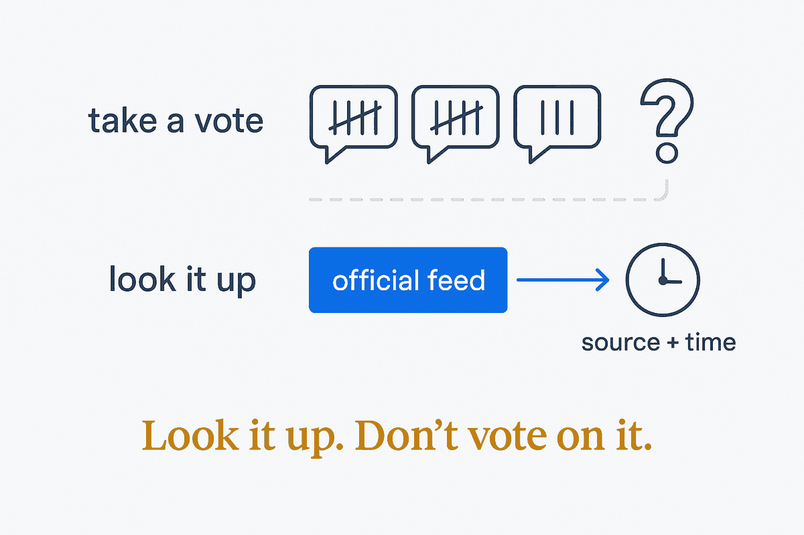

Never settle a factual dispute between AI answers by majority vote or by asking a third model. Settle it by looking it up — in a source ranked by how close it stands to the fact.

When two AI answers disagree, the tempting fixes are to ask a third model, to let them debate, or to go with the majority. All three replace a fact with an opinion about a fact. Andrej Karpathy's llm-council (2025), a weekend hack he shared for inspiration, is the best-known version: every model answers, every model ranks the others, and a "chairman" model compiles the final answer — useful for taste and options, but a vote, not a lookup. Research on model debate shows why that is dangerous: models switch from a correct answer to a wrong one under peer pressure, and by the third round a meaningful share of disputes ends in unanimous wrong agreement.
A factual dispute is settled by a lookup, not a vote. Is the visitor centre open on Monday? Ask the park's own alert feed. Is the restaurant still in business? Ask the business status in a maps database, then the restaurant's own site. Is there road work on the route? Ask the state's road-condition feed — and check the direction.
That only works with an explicit source hierarchy, decided before the dispute: official feeds and operator sites first, then structured place data, then recent reviews, and model memory last. A review site is not evidence that a place is open; it keeps closed places listed for years.
Every resolved claim gets the source and the time it was checked. A claim no source can confirm is not quietly kept — it is marked unknown, and for anything that matters (a closure, a road, a permit, a booking) a person calls ahead. Flag, don't guess.